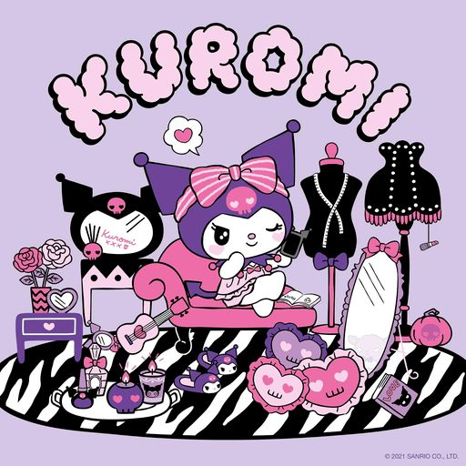

Kuromi
Hello Kitty
My Melody
Cinnamoroll
Little Twin Stars
Pochacco
Pompompurin
Kuromi

Facts About Kuromi
- Kuromi isn't just any character; she's a symbol of rebellion in the kawaii world of Sanrio. This rebel has black (sometimes purple) eyes, a devil-like tail, and wears a black jester's hat with pointed ears. Being a tough tomboy with a super sweet, girly personality, Kuromi sets her own rules!
- Kuromi's favorite colors are black and hot pink
- Her favorite foods are meat, pickled onions, shallots, and pumpkin-based products. Kuromi's favorite holiday is unsurprisingly Halloween, as it is also her birthday.
- Kuromi's personal goal is to become a pop superstar, and likely prove herself better than My Melody
- Kuromi is the leader of a biker gang (well they ride tricycles) the members of Kuromi's 5 are: Nyanmi, Wanmi, Konmi and Chumi
- Kuromi (in Japanese: クロミ, Kuromi) is the self-proclaimed rival of My Melody and a major antagonist in the Hello Kitty franchise. She is the main antagonist of the anime Onegai My Melody and the titular anti-heroic main protagonist of the 2023 anime web series Kuromi's Pretty Journey.
- Her signature look is her black hood with a pink skull on the front. Although she may look tough, she is very girly and is attracted to good-looking guys. Kuromi enjoys writing in her diary and is hooked on romantic short stories. Her favorite color is black and her favorite food is pickled scallions
- Kuromi's sidekick is Baku, a flying tapir similar to the baku from Japanese folklore. Baku is able to seek out people's dreams
A Kuromi Test with Answers For real Kuromi Lovers